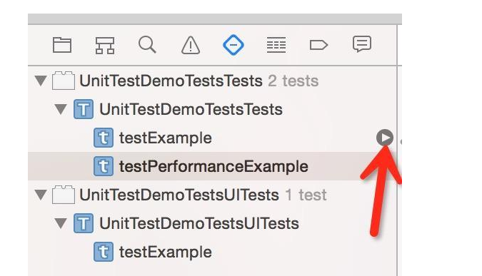

并发编程、NSThread&GCD&NSOpration&runLoop
1.并发编程
并发所描述的概念就是同时运行多个任务。这些任务可能是以在单核 CPU 上分时（时间共享）的形式同时运行，也可能是在多核 CPU 上以真正的并行方式来运行。
2.iOS 中的并发编程
常用并发编程API: pthread 、 NSThread 、GCD 、NSOperationQueue，以及 NSRunLoop。实际上把 run loop 也列在其中是有点奇怪，因为它并不能实现真正的并行，不过因为它与并发编程有莫大的关系，因此值得我们进行一些深入了解。
1.线程
线程（thread）是组成进程的子单元，操作系统的调度器可以对线程进行单独的调度。所有的并发编程 API 都是构建于线程之上的 —— 包括 GCD 和操作队列
你可以使用 InstrumentsInstruments学习传送门 中的 CPU strategy view 来得知你的代码或者你在使用的框架代码是如何在多核 CPU 中调度执行的。
开发者可以使用 POSIX 线程 API，或者 Objective-C 中提供的对该 API 的封装 NSThread，来创建自己的线程.
//下面这个小示例利用 pthread 来在一百万个数字中查找最小值和最大值。其中并发执行了 4 个线程，可以看出来十分复杂;因为过于复杂这里不提供代码
NSThread 是 Objective-C 对 pthread 的一个封装。通过封装，在 Cocoa 环境中，可以让代码看起来更加亲切。我们可以用NSThread定义一个这样的子类(在一百万个数字中查找最小值和最大值):
@interface FindMinMaxThread : NSThread
@property (nonatomic) NSUInteger min;
@property (nonatomic) NSUInteger max;
- (instancetype)initWithNumbers:(NSArray *)numbers;
@end
@implementation FindMinMaxThread {
NSArray *_numbers;
}
- (instancetype)initWithNumbers:(NSArray *)numbers
{
self = [super init];
if (self) {
_numbers = numbers;
}
return self;
}
- (void)main
{
NSUInteger min;
NSUInteger max;
// 进行相关数据的处理
self.min = min;
self.max = max;
}
@end
要想启动一个新的线程，需要创建一个线程对象，然后调用它的 start 方法：
NSMutableSet *threads = [NSMutableSet set];
NSUInteger numberCount = self.numbers.count;
NSUInteger threadCount = 4;
for (NSUInteger i = 0; i < threadCount; i++) {
NSUInteger offset = (count / threadCount) * i;
NSUInteger count = MIN(numberCount - offset, numberCount / threadCount);
NSRange range = NSMakeRange(offset, count);
NSArray *subset = [self.numbers subarrayWithRange:range];
FindMinMaxThread *thread = [[FindMinMaxThread alloc] initWithNumbers:subset];
[threads addObject:thread];
[thread start];
}
然后我们可以通过检测线程的isFinish属性来检测新生成的线程是否结束,并获取结果。虽然NSThred已经封装但是仍然体验非常糟糕
使用这样创建线程的问题：
直接使用线程可能会引发的一个问题是，如果你的代码和所基于的框架代码都创建自己的线程时，那么活动的线程数量有可能以指数级增长。这在大型工程中是一个常见问题。例如，在 8 核 CPU 中，你创建了 8 个线程来完全发挥 CPU 性能。然而在这些线程中你的代码所调用的框架代码也做了同样事情（因为它并不知道你已经创建的这些线程），这样会很快产生成成百上千的线程。代码的每个部分自身都没有问题，然而最后却还是导致了问题。使用线程并不是没有代价的，每个线程都会消耗一些内存和内核资源。
接下来，我们将介绍两个基于队列的并发编程 API ：GCD 和 operation queue 。它们通过集中管理一个被大家协同使用的线程池，来解决上面遇到的问题。
Grand Central Dispatch（GCD）
苹果在 iOS 4 中引入GCD
通过 GCD，开发者不用再直接跟线程打交道了，只需要向队列中添加代码块即可，GCD 在后端管理着一个线程池。GCD 不仅决定着你的代码块将在哪个线程被执行，它还根据可用的系统资源对这些线程进行管理。这样可以将开发者从线程管理的工作中解放出来，通过集中的管理线程，来缓解大量线程被创建的问题。
GCD给开发者带来最大便利我们只需要将工作考虑为一个队列，而不是一堆线程
GCD 公开有 5 个不同的队列：运行在主线程中的 main queue，3 个不同优先级的后台队列，以及一个优先级更低的后台队列（用于 I/O）。 另外，开发者可以创建自定义队列：串行或者并行队列。自定义队列非常强大，在自定义队列中被调度的所有 block 最终都将被放入到系统的全局队列中和线程池中。

我们强烈建议，在绝大多数情况下使用默认的优先级队列就可以。如果执行的任务需要访问一些共享的资源，那么在不同优先级的队列中调度这些任务很快就会造成不可预期的行为。这样可能会引起程序的完全挂起，因为低优先级的任务阻塞了高优先级任务，使它不能被执行。
Operation Queues
操作队列（operation queue）是由 GCD 提供的一个队列模型的 Cocoa 抽象.
NSOperationQueue 有两种不同类型的队列：主队列和自定义队列。主队列运行在主线程之上，而自定义队列在后台执行.在两种类型中，这些队列所处理的任务都使用NSOperation的子类来表述。
你可以通过重写 main 或者 start 方法 来定义自己的 operations;前一种方法非常简单，开发者不需要管理一些状态属性（例如 isExecuting 和 isFinished），当 main 方法返回的时候，这个 operation 就结束了。这种方式使用起来非常简单，但是灵活性相对重写 start 来说要少一些。
//注意：在NSThread和NSOperation中重写Main方法来自定义子类时不需要调用[super main]
子类的是NSOperation即在队列中的任务，而不是NSOperationQueue
Object-c
@implementation YourOperation
- (void)main
{
// 进行处理 ...
}
@end
//如果你希望拥有更多的控制权，以及在一个操作中可以执行异步任务，那么就重写 start 方法：
@implementation YourOperation
- (void)start
{
self.isExecuting = YES;
self.isFinished = NO;
// 开始处理，在结束时应该调用 finished ...
}
- (void)finished
{
self.isExecuting = NO;
self.isFinished = YES;
}
@end
/**
注意：这种情况下，你必须手动管理操作的状态。 为了让操作队列能够捕获到操作的改变，需要将状态的
属性以配合 KVO 的方式进行实现。如果你不使用它们默认的 setter 来进行设置的话，你就需要在合适
的时候发送合适的 KVO 消息。
*/
为了能使用操作队列所提供的取消功能，你需要在长时间操作中时不时地检查isCancelled属性：
- (void)main
{
while (notDone && !self.isCancelled) {
// 进行处理
}
}
当你定义好 operation 类之后，就可以很容易的将一个 operation 添加到队列中：
NSOperationQueue *queue = [[NSOperationQueue alloc] init];
YourOperation *operation = [[YourOperation alloc] init];
[queue addOperation:operation];
另外，你也可以将 block 添加到操作队列中。这有时候会非常的方便，比如你希望在主队列中调度一个一次性任务：
[[NSOperationQueue mainQueue] addOperationWithBlock:^{
// 代码...
}];
虽然通过这种的方式在队列中添加操作会非常方便，但是定义你自己的 NSOperation 子类会在调试时很有帮助。如果你重写 operation 的description方法，就可以很容易的标示出在某个队列中当前被调度的所有操作 。
除了提供基本的调度操作或 block 外，操作队列还提供了在 GCD 中不太容易处理好的特性的功能：
- 例如，你可以通过 maxConcurrentOperationCount 属性来控制一个特定队列中可以有多少个操作参与并发执行。将其设置为 1 的话，你将得到一个串行队列，这在以隔离为目的的时候会很有用。
可以根据队列中 operation 的优先级对其进行排序，这不同于 GCD 的队列优先级，它只影响当前队列中所有被调度的 operation 的执行先后。如果你需要进一步在除了 5 个标准的优先级以外对 operation 的执行顺序进行控制的话，还可以在 operation 之间指定依赖关系，如下：
[intermediateOperation addDependency:operation1]; [intermediateOperation addDependency:operation2]; [finishedOperation addDependency:intermediateOperation]; /** 这些简单的代码可以确保 operation1 和 operation2 在 intermediateOperation 之前执 行，当然，也会在 finishOperation 之前被执行。对于需要明确的执行顺序时，操作依赖是非常 强大的一个机制。它可以让你创建一些操作组，并确保这些操作组在依赖它们的操作被执行之前执 行，或者在并发队列中以串行的方式执行操作。 */从本质上来看，操作队列的性能比 GCD 要低那么一点，不过，大多数情况下这点负面影响可以忽略不计，操作队列是并发编程的首选工具。
XCTest单元测试
1.基础知识
什么是单元测试:
单元测试是开发者编写的一小段代码，用于检验被测代码中的一个很明确的功能是否正确。通常而言，一个单元测试是用于判断某个特定条件（或者场景）下某个特定函数的行为。
单元测试在程序里面可以理解一个模块一个方法，在每个可能存在的模块都进行测试，确保每个模块都没有问题，从而提高整体程序的质量。
XCTest使用方法
测试用例被分到继承
XCTestCase的不同子类中去。
每个以 test 为开头的方法都是一个测试用例。
自定义类命名
我们可以用比如testThatIt将重点转移到期望的结果上的测试用例
test + 要测试的方法和类名，比如像 testHTTPRequest来测试一些特定类型的
我们还可以采用category 来将它们按主题分类Given / When / Then
根据Given-When-Then模式来组织我们的测试用例
这三部分分别指:Given:通过创建模型对象或将被测试的系统设置到指定的状态，来设定测试环境
When:包含了我们要测试的代码
Then:检查我们行为的结果，这里通常为一些断言可重用代码
整理所有有用的代码片段，并将它们加入到一个公共类中，为所有的测试用例服务,这个公共类非常实用。这个测试基础类能够运行自己的 -setUp 和 -tearDown 方法来配置环境。我们大部分情况用它来初始化测试用的 Core Data 栈，来重新设置我们的具有确定性的 NSUUID (这是那些可以让调试简单得多的一些东西中的一个)，并且设置一些后台的魔法来简化异步测试。Mock
我们使用的Mock框架是OCMock，mock 是一个在方法调用时返回标准答案的对象
XCTest使用范畴
Apple在Xcode 6中新增了UnitTest
XCTest测试范畴：
基本逻辑测试处理测试
异步加载数据测试
数据mock测试
XCTest常用基本测试工具
XCTest常用的一些判断工具都是以XCT开头的
补充:代码覆盖率：代码覆盖率 ＝ 实际执行的代码行数 / 整个工程总代码行数，直白来讲就是这样一个数值； Xcode7以后Apple推出了更为人性化的工具来统计代码覆盖率，使用简介传送门
用XCTest完成的最简单的测试Demo
创建项目时勾选

进入项目

进入到这个类，
setUp是每个测试方法调用前执行，tearDown是每个测试方法调用后执行。testExample是测试方法，和我们新建的没有差别。不过测试方法必须testXXX的格式，且不能有参数，不然不会识别为测试方法。测试方法的执行顺序是字典序排序。

测试用例
点击上图箭头的开始图标即可测试这个文件中测试方法
在测试方法前也有开始图标,点击即可测试这个方法

按快捷键Command + U进行单元测试，这个快捷键是全部测试

这里我们断言a=0是错误的所以没有通过XCTest常见的断言
XCTFail(format…) 生成一个失败的测试； XCTAssertNil(a1, format...)为空判断，a1为空时通过，反之不通过； XCTAssertNotNil(a1, format…)不为空判断，a1不为空时通过，反之不通过； XCTAssert(expression, format...)当expression求值为TRUE时通过； XCTAssertTrue(expression, format...)当expression求值为TRUE时通过； XCTAssertFalse(expression, format...)当expression求值为False时通过； XCTAssertEqualObjects(a1, a2, format...)判断相等，[a1 isEqual:a2]值为TRUE时通过，其中一个不为空时，不通过； XCTAssertNotEqualObjects(a1, a2, format...)判断不等，[a1 isEqual:a2]值为False时通过； XCTAssertEqual(a1, a2, format...)判断相等（当a1和a2是 C语言标量、结构体或联合体时使用,实际测试发现NSString也可以）； XCTAssertNotEqual(a1, a2, format...)判断不等（当a1和a2是 C语言标量、结构体或联合体时使用）； XCTAssertEqualWithAccuracy(a1, a2, accuracy, format...)判断相等，（double或float类型）提供一个误差范围，当在误差范围（+/-accuracy）以内相等时通过测试； XCTAssertNotEqualWithAccuracy(a1, a2, accuracy, format...) 判断不等，（double或float类型）提供一个误差范围，当在误差范围以内不等时通过测试； XCTAssertThrows(expression, format...)异常测试，当expression发生异常时通过；反之不通过；（很变态） XCTAssertThrowsSpecific(expression, specificException, format...) 异常测试，当expression发生specificException异常时通过；反之发生其他异常或不发生异常均不通过； XCTAssertThrowsSpecificNamed(expression, specificException, exception_name, format...)异常测试，当expression发生具体异常、具体异常名称的异常时通过测试，反之不通过； XCTAssertNoThrow(expression, format…)异常测试，当expression没有发生异常时通过测试； XCTAssertNoThrowSpecific(expression, specificException, format...)异常测试，当expression没有发生具体异常、具体异常名称的异常时通过测试，反之不通过； XCTAssertNoThrowSpecificNamed(expression, specificException, exception_name, format...)异常测试，当expression没有发生具体异常、具体异常名称的异常时通过测试，反之不通过注意: 特别注意下XCTAssertEqualObjects和XCTAssertEqual。
XCTAssertEqualObjects(a1, a2, format...)的判断条件是[a1 isEqual:a2]是否返回一个YES。XCTAssertEqual(a1, a2, format...)的判断条件是a1 == a2是否返回一个YES。对于后者，如果a1和a2都是基本数据类型变量，那么只有a1 == a2才会返回YES
XCAssertEqual(a1, a2, format...)当a1和a2是 C语言标量、结构体或联合体时使用,实际测试发现NSString也可以性能测试用例的实现

1. XCTest异步测试
XCTestExpression类带入了异步测试,我们可以可以等待指定长度的时间，一直到某些条件符合的时候在开始测试。而不用再写很多的GCD代码控制
我们可以定义这样的宏
#define WAIT do {\
[self expectationForNotification:@"RSBaseTest" object:nil handler:nil];\
[self waitForExpectationsWithTimeout:30 handler:nil];\
} while (0);
#define NOTIFY \
[[NSNotificationCenter defaultCenter]postNotificationName:@"RSBaseTest" object:nil];
异步网络测试用例
-(void)testRequest{
// 1.获得请求管理者
AFHTTPRequestOperationManager *mgr = [AFHTTPRequestOperationManager manager];
mgr.responseSerializer.acceptableContentTypes = [NSSet setWithObjects:@"text/html",nil];
// 2.发送GET请求
[mgr GET:@"http://www.weather.com.cn/adat/sk/101110101.html" parameters:nil success:^(AFHTTPRequestOperation *operation, id responseObject) {
NSLog(@"responseObject:%@",responseObject);
XCTAssertNotNil(responseObject, @"返回出错");
self.stAlertView = [[STAlertView alloc]initWithTitle:@"验证码" message:nil textFieldHint:@"请输入手机验证码" textFieldValue:nil cancelButtonTitle:@"取消" otherButtonTitle:@"确定" cancelButtonBlock:^{
//点击取消返回后执行
[self testAlertViewCancel];
NOTIFY //继续执行
} otherButtonBlock:^(NSString *b) {
//点击确定后执行
[self alertViewComfirm:b];
NOTIFY //继续执行
}];
[self.stAlertView show];
} failure:^(AFHTTPRequestOperation *operation, NSError *error) {
NSLog(@"error:%@",error);
XCTAssertNil(error, @"请求出错");
NOTIFY //继续执行
}];
WAIT //暂停
}
Copyright © 2015 Powered by MWeb, Theme used GitHub CSS.